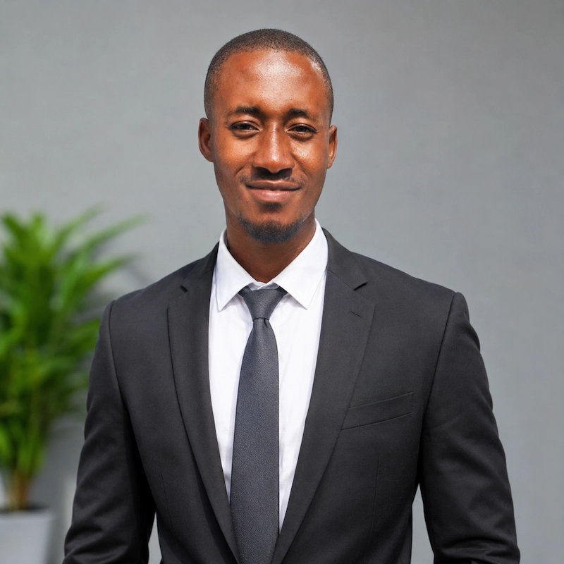

Joshua Godswill|WDD 130

I am Godswill Joshua Ekene, a Nigerian entrepreneur, technology enthusiast, husband, father, and aspiring software engineer with a strong passion for learning, innovation, personal development, and creating opportunities. I am originally from Ubakala, Umuahia, Abia State, Nigeria, and currently based in Port Harcourt. I am pursuing a degree in Software Development through BYU–Pathway Worldwide, with the goal of earning my bachelor's degree from BYU–Idaho. I have a strong interest in software engineering, Python programming, cybersecurity, artificial intelligence, DevOps, and building technology solutions that solve real-world problems. Beyond my education, I have an entrepreneurial mindset and a passion for building sustainable businesses. I currently operate EL MOVIL, a phone repair business, and have explored other business ideas, including Kairo Mobile, Kairo Skills, and AutoLuxia Motors. I hope to grow these ventures into successful businesses that create employment opportunities and empower young people with practical, employable skills. I am also passionate about content creation, storytelling, and digital media. Through my YouTube channel concept, Crime With Joe, I aim to share factual and engaging stories about true crime, historical events, unsolved mysteries, and extraordinary human experiences. My Christian faith is an important part of my identity. As a member of The Church of Jesus Christ of Latter-day Saints, I value spiritual growth, service, scripture study, and developing Christlike attributes. One of my greatest ambitions is to pursue a master's degree abroad, particularly in Germany, Italy, or another country where I can access better educational and professional opportunities. I am working towards building the academic qualifications, technical skills, financial stability, and experience necessary to achieve this goal. Above all, I am a family-oriented person who wants to create a better future for my wife and children. I believe in continuous learning, hard work, consistency, and the power of turning ideas into reality. My ultimate goal is to become a highly skilled technology professional, a successful entrepreneur, a responsible family man, and someone whose knowledge, achievements, and contributions positively impact the lives of others.